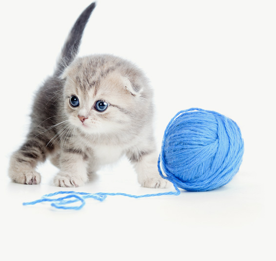
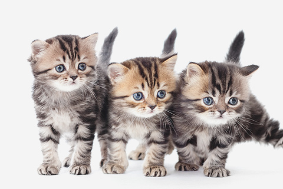

Contact us
British Shorthair & Scottish fold
- follow us
- contacts
- location
-
28 Jackson Blvd Ste 1020 Chicago
IL 60604-2340
01
welcome to our website
For many years, the British Shorthair has been named the country's most popular breed according to the Governing Council of the Cat Fancy (GCCF), and with its affectionate nature and teddy-bear good looks, it's not hard to see why. As far as personality goes, the British Shorthair is an amazing cat.
British shorthair Breed Profile
- Breed number
- 40
- Average lifespan
- 15 to 20 years
- Temperament
- Friendly and affectionate, loyal and devoted, good with children and other pets.
- Weight
- Males 6.8 to 8.1kg; females 4.5 to 5.4kg
- AVAILABILITY
- Easy
- Colours
- Available in almost every colour and coat pattern you can think of.
- Grooming
- Once a week is adequate. A simple hand groom will often remove dead hair.

02
Choosing a Cat
Choosing between a male and a female is not an easy task, as both make wonderful companions. Differences in personality are mostly attributable to the fact that everyone has something unique about them, rather than to male vs. female differences.
- 
-
Date of birth:
delivery possible

-
Date of birth:
delivery possible
-
Date of birth:
delivery possible
articles & publications
03